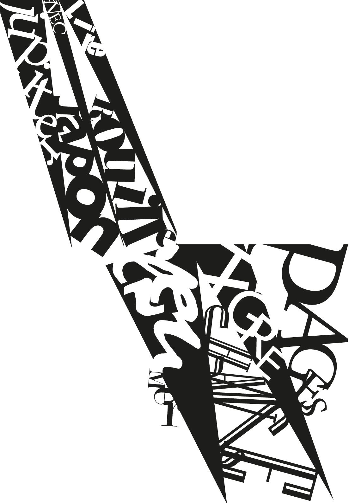
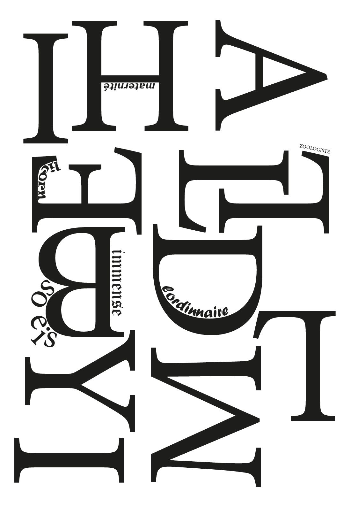
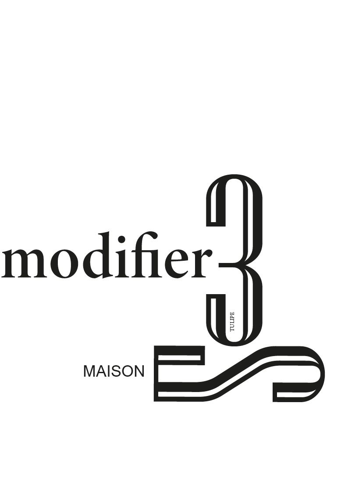

<h1>Typographie avec des mots </h1>
<h2>Livre sur ces inspirations </h2>
<body style="background-color:#013595;">
</body>
<h3>Trouver des mots au hasard et jouer avec cest lettres pour en constituer une couverture</h3>
<a href="image/Couv2.jpg"></a> 
<a href="image/Couv3.jpg"></a> 
<a href="image/Couv4.jpg"></a> 